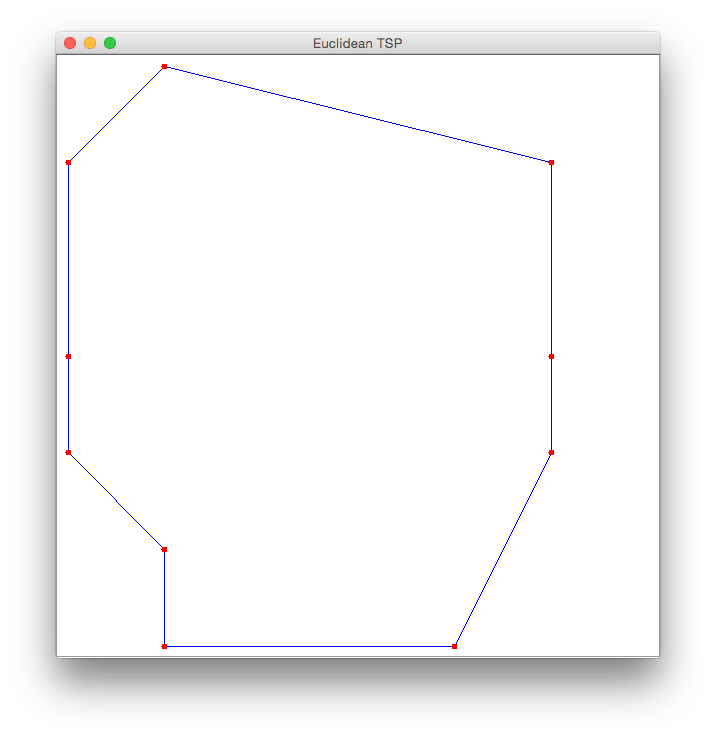
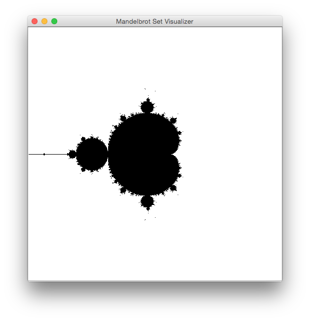

Assignment 1: A compute server
Paper Summary
Submit a 1-page summary, using entirely your own words, of the paper titled, "A Note on Distributed Computing."
Purpose
The purpose of this programming assignment is to:
- Give you experience working with Java RMI
- Begin building a Java-centric cluster computing infrastructure.
Specification
Build a simple compute server:
- Tasks are sent to it;
- It performs the computational task, and returns a result object.
The API
- Define a Task<T> interface with 1 method that takes no arguments and returns an object of type T.
- Define a remote interface, Computer, with 1 method that has 1 argument, a Task object, and returns an object of type T, the Task method's return value type.
Define a ComputerImpl class that implements Computer.
Define immutable classes that implement Task
MandelbrotSetTask
- This task helps produce a visualization of the some part of the Mandelbrot set.
- The constructor takes the following inputs:
- 2 doubles that represent the lower left corner of a square in the complex plane.
- a double that represents the edge length of a square in the complex plane, whose sides are parallel to the axes.
- an int , n, such that the square region of the complex plane is subdivided into n X n squares, each of which is visualized by 1 pixel.
- an int which is the iteration limit: It defines when the representative point of a region is considered to be in the Mandelbrot set.
- The execute method returns an Integer[n][n] count array, where count[i][j] = k,
where |zk| > 2 or k is the iteration limit (whichever is smaller), where
- z0 = c, where c is the representative point in square[i][j] (typically the lower left point defining the square)
- zk = (zk-1)2 + c.
- Your client maps each element of the count array (i.e., elements in the set {0, 1, 2, ..., iterationLimit }) to a Color object, and displays the n X n array of colors, 1 pixel per Color.
Java graphics and GUI is not part of this course. Here is a snippet of client code that can be used to display the pixels:
| /Users/petercappello/NetBeansProjects/cs190bHw1/src/clients/Client.java |
/* * The MIT License * * Copyright 2015 peter. * * Permission is hereby granted, free of charge, to any person obtaining a copy * of this software and associated documentation files (the "Software"), to deal * in the Software without restriction, including without limitation the rights * to use, copy, modify, merge, publish, distribute, sublicense, and/or sell * copies of the Software, and to permit persons to whom the Software is * furnished to do so, subject to the following conditions: * * The above copyright notice and this permission notice shall be included in * all copies or substantial portions of the Software. * * THE SOFTWARE IS PROVIDED "AS IS", WITHOUT WARRANTY OF ANY KIND, EXPRESS OR * IMPLIED, INCLUDING BUT NOT LIMITED TO THE WARRANTIES OF MERCHANTABILITY, * FITNESS FOR A PARTICULAR PURPOSE AND NONINFRINGEMENT. IN NO EVENT SHALL THE * AUTHORS OR COPYRIGHT HOLDERS BE LIABLE FOR ANY CLAIM, DAMAGES OR OTHER * LIABILITY, WHETHER IN AN ACTION OF CONTRACT, TORT OR OTHERWISE, ARISING FROM, * OUT OF OR IN CONNECTION WITH THE SOFTWARE OR THE USE OR OTHER DEALINGS IN * THE SOFTWARE. */ package clients; import api.Computer; import api.Task; import computer.ComputerImpl; import java.awt.BorderLayout; import java.awt.Container; import java.net.MalformedURLException; import java.rmi.Naming; import java.rmi.NotBoundException; import java.rmi.RemoteException; import java.util.logging.Level; import java.util.logging.Logger; import javax.swing.JFrame; import javax.swing.JLabel; import javax.swing.JScrollPane; /** * * @author Peter Cappello * @param <T> return type the Task that this Client executes. */ public class Client<T> extends JFrame { final protected Task<T> task; final private Computer computer; public Client( final String domainName, final Task<T> task ) throws RemoteException, NotBoundException, MalformedURLException { this.task = task; String url = "rmi://" + domainName + ":" + Computer.PORT + "/" + Computer.SERVICE_NAME; computer = domainName == null || domainName.isEmpty() ? new ComputerImpl() : (Computer) Naming.lookup( url ); } void init( final String title ) { this.setTitle( title ); setDefaultCloseOperation( JFrame.EXIT_ON_CLOSE ); } public void add( final JLabel jLabel ) { final Container container = getContentPane(); container.setLayout( new BorderLayout() ); container.add( new JScrollPane( jLabel ), BorderLayout.CENTER ); pack(); setVisible( true ); } public T runTask() throws RemoteException { final long taskStartTime = System.nanoTime(); final T value = computer.execute( task ); final long taskRunTime = ( System.nanoTime() - taskStartTime ) / 1000000; Logger.getLogger( Client.class.getCanonicalName() ) .log( Level.INFO, "Task {0}Task time: {1} ms.", new Object[]{ task, taskRunTime } ); return value; } }
| /Users/petercappello/NetBeansProjects/cs190bHw1/src/clients/ClientMandelbrotSet.java |
/* * The MIT License * * Copyright 2015 peter. * * Permission is hereby granted, free of charge, to any person obtaining a copy * of this software and associated documentation files (the "Software"), to deal * in the Software without restriction, including without limitation the rights * to use, copy, modify, merge, publish, distribute, sublicense, and/or sell * copies of the Software, and to permit persons to whom the Software is * furnished to do so, subject to the following conditions: * * The above copyright notice and this permission notice shall be included in * all copies or substantial portions of the Software. * * THE SOFTWARE IS PROVIDED "AS IS", WITHOUT WARRANTY OF ANY KIND, EXPRESS OR * IMPLIED, INCLUDING BUT NOT LIMITED TO THE WARRANTIES OF MERCHANTABILITY, * FITNESS FOR A PARTICULAR PURPOSE AND NONINFRINGEMENT. IN NO EVENT SHALL THE * AUTHORS OR COPYRIGHT HOLDERS BE LIABLE FOR ANY CLAIM, DAMAGES OR OTHER * LIABILITY, WHETHER IN AN ACTION OF CONTRACT, TORT OR OTHERWISE, ARISING FROM, * OUT OF OR IN CONNECTION WITH THE SOFTWARE OR THE USE OR OTHER DEALINGS IN * THE SOFTWARE. */ package clients; import java.awt.Color; import java.awt.Graphics; import java.awt.Image; import java.awt.image.BufferedImage; import java.net.MalformedURLException; import java.rmi.NotBoundException; import java.rmi.RemoteException; import javax.swing.ImageIcon; import javax.swing.JLabel; import tasks.TaskMandelbrotSet; /** * * @author Peter Cappello */ public class ClientMandelbrotSet extends Client<Integer[][]> { private static final double LOWER_LEFT_X = -2.0; private static final double LOWER_LEFT_Y = -2.0; private static final double EDGE_LENGTH = 4.0; private static final int N_PIXELS = 512; private static final int ITERATION_LIMIT = 64; public ClientMandelbrotSet() throws RemoteException, NotBoundException, MalformedURLException { super( "" /* "localhost" */, new TaskMandelbrotSet( LOWER_LEFT_X, LOWER_LEFT_Y, EDGE_LENGTH, N_PIXELS, ITERATION_LIMIT) ); } /** * Run the MandelbrotSet visualizer client. * @param args unused * @throws java.rmi.RemoteException */ public static void main( String[] args ) throws Exception { System.setSecurityManager( new SecurityManager() ); final ClientMandelbrotSet client = new ClientMandelbrotSet(); client.init( "Mandelbrot Set Visualizer" ); Integer[][] value = client.runTask(); client.add( client.getLabel( value ) ); } public JLabel getLabel( Integer[][] counts ) { final Image image = new BufferedImage( N_PIXELS, N_PIXELS, BufferedImage.TYPE_INT_ARGB ); final Graphics graphics = image.getGraphics(); for ( int i = 0; i < counts.length; i++ ) for ( int j = 0; j < counts.length; j++ ) { graphics.setColor( getColor( counts[i][j] ) ); graphics.fillRect( i, N_PIXELS - j, 1, 1 ); } return new JLabel( new ImageIcon( image ) ); } private Color getColor( int iterationCount ) { return iterationCount == ITERATION_LIMIT ? Color.BLACK : Color.WHITE; } }
EuclideanTspTask
- This task solves a Traveling Salesman Problem (TSP), where the cities are points in the 2D Euclidean plane.
- The constructor takes a double[][] cities that codes the x and y coordinates of city[i]: cities[i][0] is the x-coordinate of city[i] and cities[i][1] is the y-coordinate of city[i].
- The distance between cities is the Euclidean distance.
- The execute method returns an int[] tour that lists the order of the cities of a minimal distance tour. Its method of finding this tour does not have to be clever: For example, your program can iterate over all permutations of the cities, and return a permutation of least cost (which is not unique).
Java graphics and GUI is not part of this course. Here is a snippet of Euclidean TSP client code that can be used to display the tour, extending the Client class above:
| /Users/petercappello/NetBeansProjects/cs190bHw1/src/clients/ClientEuclideanTsp.java |
/* * The MIT License * * Copyright 2015 peter. * * Permission is hereby granted, free of charge, to any person obtaining a copy * of this software and associated documentation files (the "Software"), to deal * in the Software without restriction, including without limitation the rights * to use, copy, modify, merge, publish, distribute, sublicense, and/or sell * copies of the Software, and to permit persons to whom the Software is * furnished to do so, subject to the following conditions: * * The above copyright notice and this permission notice shall be included in * all copies or substantial portions of the Software. * * THE SOFTWARE IS PROVIDED "AS IS", WITHOUT WARRANTY OF ANY KIND, EXPRESS OR * IMPLIED, INCLUDING BUT NOT LIMITED TO THE WARRANTIES OF MERCHANTABILITY, * FITNESS FOR A PARTICULAR PURPOSE AND NONINFRINGEMENT. IN NO EVENT SHALL THE * AUTHORS OR COPYRIGHT HOLDERS BE LIABLE FOR ANY CLAIM, DAMAGES OR OTHER * LIABILITY, WHETHER IN AN ACTION OF CONTRACT, TORT OR OTHERWISE, ARISING FROM, * OUT OF OR IN CONNECTION WITH THE SOFTWARE OR THE USE OR OTHER DEALINGS IN * THE SOFTWARE. */ package clients; import java.awt.Color; import java.awt.Graphics; import java.awt.Image; import java.awt.image.BufferedImage; import java.net.MalformedURLException; import java.rmi.NotBoundException; import java.rmi.RemoteException; import java.util.List; import java.util.logging.Level; import java.util.logging.Logger; import javax.swing.ImageIcon; import javax.swing.JLabel; import tasks.TaskEuclideanTsp; /** * * @author Peter Cappello */ public class ClientEuclideanTsp extends Client<List<Integer>> { private static final int NUM_PIXALS = 600; private static final double[][] CITIES = { { 6, 3 }, { 2, 2 }, { 5, 8 }, { 1, 5 }, { 1, 6 }, { 2, 7 }, { 2, 8 }, { 6, 5 }, { 1, 3 }, { 6, 6 } }; public ClientEuclideanTsp() throws RemoteException, NotBoundException, MalformedURLException { super( "", new TaskEuclideanTsp( CITIES ) ); } public static void main( String[] args ) throws Exception { System.setSecurityManager( new SecurityManager() ); final ClientEuclideanTsp client = new ClientEuclideanTsp(); client.init( "Euclidean TSP" ); final List<Integer> value = client.runTask(); client.add( client.getLabel( value.toArray( new Integer[0] ) ) ); } public JLabel getLabel( final Integer[] tour ) { Logger.getLogger( ClientEuclideanTsp.class.getCanonicalName() ).log(Level.INFO, tourToString( tour ) ); // display the graph graphically, as it were // get minX, maxX, minY, maxY, assuming they 0.0 <= mins double minX = CITIES[0][0], maxX = CITIES[0][0]; double minY = CITIES[0][1], maxY = CITIES[0][1]; for ( double[] cities : CITIES ) { if ( cities[0] < minX ) minX = cities[0]; if ( cities[0] > maxX ) maxX = cities[0]; if ( cities[1] < minY ) minY = cities[1]; if ( cities[1] > maxY ) maxY = cities[1]; } // scale points to fit in unit square final double side = Math.max( maxX - minX, maxY - minY ); double[][] scaledCities = new double[CITIES.length][2]; for ( int i = 0; i < CITIES.length; i++ ) { scaledCities[i][0] = ( CITIES[i][0] - minX ) / side; scaledCities[i][1] = ( CITIES[i][1] - minY ) / side; } final Image image = new BufferedImage( NUM_PIXALS, NUM_PIXALS, BufferedImage.TYPE_INT_ARGB ); final Graphics graphics = image.getGraphics(); final int margin = 10; final int field = NUM_PIXALS - 2*margin; // draw edges graphics.setColor( Color.BLUE ); int x1, y1, x2, y2; int city1 = tour[0], city2; x1 = margin + (int) ( scaledCities[city1][0]*field ); y1 = margin + (int) ( scaledCities[city1][1]*field ); for ( int i = 1; i < CITIES.length; i++ ) { city2 = tour[i]; x2 = margin + (int) ( scaledCities[city2][0]*field ); y2 = margin + (int) ( scaledCities[city2][1]*field ); graphics.drawLine( x1, y1, x2, y2 ); x1 = x2; y1 = y2; } city2 = tour[0]; x2 = margin + (int) ( scaledCities[city2][0]*field ); y2 = margin + (int) ( scaledCities[city2][1]*field ); graphics.drawLine( x1, y1, x2, y2 ); // draw vertices final int VERTEX_DIAMETER = 6; graphics.setColor( Color.RED ); for ( int i = 0; i < CITIES.length; i++ ) { int x = margin + (int) ( scaledCities[i][0]*field ); int y = margin + (int) ( scaledCities[i][1]*field ); graphics.fillOval( x - VERTEX_DIAMETER/2, y - VERTEX_DIAMETER/2, VERTEX_DIAMETER, VERTEX_DIAMETER); } return new JLabel( new ImageIcon( image ) ); } private String tourToString( Integer[] cities ) { StringBuilder stringBuilder = new StringBuilder(); stringBuilder.append( "Tour: " ); for ( Integer city : cities ) { stringBuilder.append( city ).append( ' ' ); } return stringBuilder.toString(); } }
Exercise each task class
Define a client that:
- gets the domain name or IP address of a machine that is running a Computer. (It is either hard-coded in the client, obtained from the command line, or read from a file.)
- obtains a remote reference to a Computer;
- constructs an instance of its Task class, as specified above;
- for that instance:
- invokes the Computer's remote execute method, passing the Task object as an argument;
- For the MandelbrotSetTask use the parameter values:
- -2.0, -2.0
- 4.0
- 512
- 64
-
For the EuclideanTspTask, use the following list of cities as a problem instance:
Each line that follows has the x and y coordinates of a city, starting with city 0 and ending with city 9:
6 3
2 2
5 8
1 5
1 6
2 7
2 8
6 5
1 3
6 6
If you plot these cities, a minimal tour is obvious: 0, 1, 8, 3, 4, 5, 6, 2, 9, 7. -
suitably display the arguments and return value.
- 
- 
Experiment
- Start a Computer.
- Start a Mandelbrot set visualization client.
- Start a Euclidean TSP client.
Extra credit feature (2 points)
When you deploy ComputerImpl in a separte JVM from the client, make sure that the ComputerImpl does not have the client's Task classes in its class path: The client provides a codebase.
This ensures that the ComputerImpl works with tasks whose Task class has been implemented after the ComputerImpl was deployed, without having to restart the ComputerImpl. This is not the same as the ComputerImpl reloading classes which have changed, which is not a goal.
Deliverable
Mail to yourself and to <cappello@cs.ucsb.edu> a jar file, named <name>.jar or a zip file, named <name>.zip where <name> is the CS computer account username of 1 member of the pair. When mailing this attachment to me, cc yourself. We will download and open your jar/zip file during the weekly meeting. The jar/zip file includes the following directories & files:
Directories
- documents: has index.html file that contains links to:
- readme.html: Instructions to compile and run your client and compute server.
- Experimental results: For each task type, present the execution method's elapsed time, as seen by the client.
- Your paper summary.
- source: directory (it does not need to be named "source") containing the following subdirectories, reflecting the package structure:
- tasks, which contains your Task classes (each Task subtype may be in a subpackage, if you prefer)
- client, which contains your client class[es]
- system, which contains your implementation of the Computer interface.
- api, which contains your Task and Computer interfaces.
- library: has any executables, typically jar files, that are not written by your team, but are needed to compile your work.
Files
- policy file
- build.xml file with targets to:
- build: builds your system. Creates a computer.jar and client.jar.
- runComputer: starts a Computer whose classpath does not include the client's Task classes.
- runClientMandelbrot: starts a Mandelbrot client.
- runClientTsp: starts a TSP client.
Here is a sample build.xml file which you will need to alter. (To get aesthetically pleasing line spacing, use "Save link as" to get this file.)
ANT: CSIL machines have it installed. If you install Ant on your own machine, then, before invoking it from the command line, set the environment variable ANT_HOME to the directory in which it is installed.